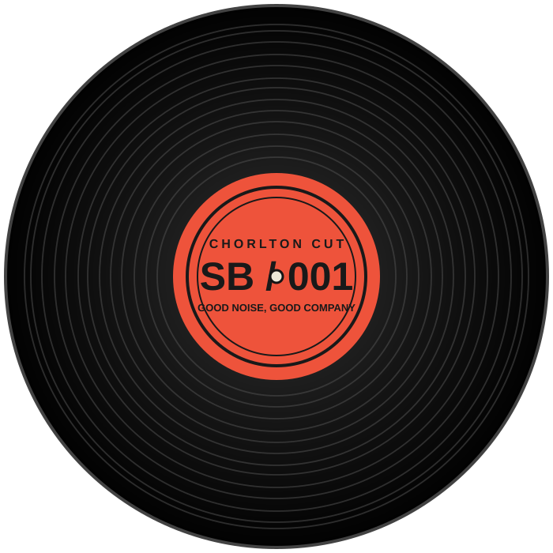

01 / THURSDAYS*↗
BRING YOUR OWN RECORDSYour record.
Your record.
Our speakers.
Thursday open decks: bring along some vinyl and share what you've been listening to.
Check this week's detailsCHORLTON / MANCHESTER BARLOW MOOR RD
Local beer. Records with character. A little place on Barlow Moor Road that goes further back than you think.

01 WHAT'S ON
Bring a record or let someone else pick the next one. The regular nights are part of what makes this place tick.
Thursday open decks: bring along some vinyl and share what you've been listening to.
Check this week's detailsSaturday vinyl DJs set the mood. Drop in, grab a drink and see where the music takes you.
Check this week's details*Regular activities listed by CAMRA; individual sessions and times can change. Confirm this week's plans with the venue. Venue listing ↗
03 THE PLACE
It looks like one little bar from the street. Head further in and you'll find a few more reasons to stay.
A front patio for catching up and watching Chorlton go by.
Head through the bar to the seating area with its unmistakable red finish.
The rear area makes space for music and the occasional longer night.
Original illustrative artwork, not photographs or a floor plan of the venue. See the venue on Instagram ↗
04 COME THROUGH
Near Chorlton Bus Station. Check current hours and events before you travel.
SAME CORNER.
NEW FAVOURITE RECORD.